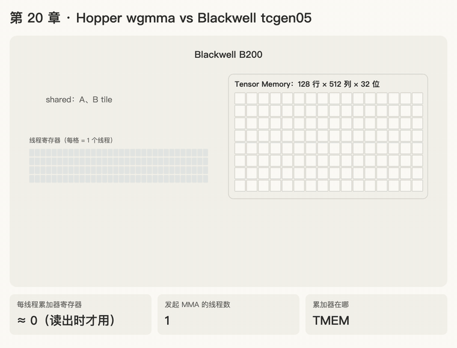

第 20 章 · Blackwell：tcgen05、Tensor Memory、2-SM MMA 与块缩放低精度
本章回答：Hopper 的 GEMM 代码为什么在 Blackwell 上直接跑不了？Tensor Memory（TMEM）是什么，为什么累加器不放寄存器了？"一个线程发起 MMA"意味着什么？两个 SM 怎么合作算一个 MMA？NVFP4、MXFP8 这些"块缩放"格式是怎么回事？
讲解日期：2026-11-14 · 上一章：第 19 章 CuTe · 下一章：第 21 章 online softmax 与算子融合
对应原文：PTX §9.7.18 TensorCore 5th Generation（materials/text/ptx-isa-9.4-focus-mma-wgmma-tcgen05-tma.txt第 12040–17350 行：§9.7.18.1 Tensor Memory 第 12040 行、§9.7.18.5 Issue Granularity 第 13135 行、§9.7.18.7 分配第 13604 行、§9.7.18.10 MMA 第 14425 行）、§9.7.16.3 Block Scaling（第 4764 行）；Colfax「Writing GEMM Kernels Using Tensor Memory For NVIDIA Blackwell GPUs」（text/blog-colfax-blackwell-tmem-gemm.txt第 43–127 行）；gau-nernst「tcgen05 for dummies」（text/blog-gau-nernst-tcgen05-for-dummies.txt，2-SM MMA 第 918–991 行）；Blackwell tuning guide（text/blackwell-tuning-guide.txt）本章缩写：tcgen05 = TensorCore generation 5（第 5 代 Tensor Core 指令族）· TMEM = Tensor MEMory（张量内存）· UMMA = CUTLASS 对 tcgen05.mma 的叫法（Universal / Unified MMA）· CTA pair（同一 cluster 里相邻的两个 block）· FP4 / FP6 / FP8 = 4 / 6 / 8 位浮点 · E2M1 / E4M3 = 2 位指数 1 位尾数 / 4 位指数 3 位尾数 · MX = Microscaling（OCP 标准的微缩放格式，32 个元素共享一个 E8M0 缩放因子）· NVFP4 = NVIDIA FP4（16 个 E2M1 元素共享一个 E4M3 缩放因子）· UE8M0 = 无符号 8 位指数、0 位尾数（只能表示 2 的幂）
讲解
第一步：wgmma 没了（2026-11-14）
Colfax 博客第一句："If you try to run a CUTLASS Hopper GEMM kernel on a Blackwell GPU……it doesn't work. The Hopper WGMMA instruction……has been deprecated on Blackwell." 取而代之的是 tcgen05.mma。和 wgmma 比，四个大变化（Colfax 第 47–52 行）：
- 支持 FP4、FP6 等更低精度，各精度吞吐都更高；
- 内建块缩放（block scaling）；
- 累加器放在 Tensor Core 专用的 Tensor Memory（TMEM） 里，不再占寄存器；
- 两个相邻 CTA 可以跨两个 SM 合作做一个 MMA；而且只需要一个线程发起。
第二步：Tensor Memory——Tensor Core 自己的台面（2026-11-14）
PTX §9.7.18.1：TMEM 是 5 代 Tensor Core 专用的片上存储，每个 CTA 128 行（lane）× 512 列，每格 32 位——即 256 KB / SM（Colfax 第 72 行）。
为什么要它？回忆第 18 章：Hopper 上 128 × 256 的 FP32 累加器放在寄存器里，每线程 256 个，直接撞到 255 的上限，不得不拆成两个 warpgroup、再做寄存器再分配。TMEM 把累加器从寄存器里搬走：
| wgmma（Hopper） | tcgen05.mma（Blackwell） | |
|---|---|---|
| A | 寄存器或 shared | TMEM 或 shared |
| B | shared | shared |
| 累加器 D | 寄存器（拆散在 128 个线程里） | TMEM（透明的行优先格式） |
| 谁发起 | 一个 warpgroup 128 个线程 | 一个线程 |
几个规矩（PTX §9.7.18.1.2、Colfax）：
- TMEM 要动态分配：一个 warp 用
tcgen05.alloc申请，以列为单位，至少 32 列、必须是 2 的幂；kernel 结束前必须tcgen05.dealloc； - 数据进出 TMEM 的方式很有限：MMA 把结果写进去；
tcgen05.ld把结果读到寄存器做后处理（epilogue）；tcgen05.cp/tcgen05.st从 shared / 寄存器写进去。除了这些指令，没有别的东西能访问 TMEM； - 每个 warp 只能访问 TMEM 的 ¼（32 个 lane），所以读出累加器时 4 个 warp 各读一部分。
意义：Colfax 的总结——"continue a trend of replacing general-purpose computational resources by specialized hardware"。Volta 用 Tensor Core 把乘加从 CUDA core 拿走；Hopper 用 TMA 把搬运从线程拿走；Blackwell 用 TMEM 把累加器从寄存器拿走、用单线程发起把 MMA 指令也从 warpgroup 拿走。线程越来越只负责"协调"。
第三步：一个线程发起，其余线程干什么（2026-11-14）
PTX §9.7.18.5 Issue Granularity：因为 MMA 的所有操作数都在 CTA 共享的空间（shared、TMEM）里，tcgen05.mma "can and must be issued by a single thread"（Colfax）。
于是 Blackwell GEMM 的典型分工（gau-nernst 博客的 warp specialization 一节）：
| warp | 干什么 |
|---|---|
| TMA warp（1 个线程实际干活） | 发 TMA 把 A、B 搬进 shared 环形缓冲区 |
| MMA warp（1 个线程实际干活） | 等数据，发 tcgen05.mma，完成时通过 tcgen05.commit 在 mbarrier 上通知 |
| epilogue warps（4 个 warp） | 等 MMA 全部完成，tcgen05.ld 读出累加器、加 bias / 激活 / 量化、写回显存 |
和第 18 章一样是生产者–消费者，只是"消费者"从一整个 warpgroup 缩成了一个线程，寄存器压力几乎消失。
第四步：2-SM MMA——两个 SM 拼一个大 MMA（2026-11-14）
tcgen05.mma.cta_group::2：cluster 里相邻的两个 CTA（CTA pair，在两个 SM 上）合作做一个 MMA。gau-nernst 博客第 918 行起的说明：
- 每个 CTA 提供 A tile 和 B tile 的一半，也各自保存一半的输出；
- MMA 的 M 最大到 256（单 SM 是 128）；
- 仍然只要一个 CTA 里的一个线程发起。
好处：一个 SM 的 shared memory 只需要放一半的 B，同样的 shared 预算可以用更大的 tile，算术强度更高（第 14 章：tile 越大，每字节显存流量做的乘加越多）。
第五步：块缩放的低精度格式（2026-11-14）
FP8 的 E4M3 只能表示约 ±448 的数，FP4（E2M1）只有 16 个可能的值。直接把一个张量整体转成 FP4，动态范围远远不够。办法是分块缩放：每一小块元素共享一个缩放因子，
PTX §9.7.16.3 把它写进了 MMA 指令本身："D = (A × scale_A) × (B × scale_B) + C"——A 的每一行沿 K 方向切成几段，每段乘一个缩放因子。按 PTX 表 46 的组合：
| 格式 | 元素类型 | 每块几个元素 | 缩放因子类型 |
|---|---|---|---|
| MXFP8 | E4M3 / E5M2 | 32 | UE8M0（2 的幂） |
| MXFP4 | E2M1 | 32 | UE8M0 |
| NVFP4 | E2M1 | 16 | UE4M3（FP8，可以不是 2 的幂） |
（块大小按 mma.sync 的 K = 64 / scale_vec 推算：2X → 32 个一块，4X → 16 个一块；与 OCP MX 规范、NVIDIA 公开的 NVFP4 说明一致〔旧知〕。）
NVFP4 用更小的块和更精细的缩放因子，换来比 MXFP4 更好的精度。缩放在 Tensor Core 里硬件完成，kernel 不用手动乘回去。DeepGEMM 的 FP8 细粒度缩放、GPU MODE 2026 年初的 NVFP4 hackathon（04 调研 §2.1）都围绕这一点。
第六步：B200 的数字与消费级 Blackwell（2026-11-14）
Blackwell tuning guide（第 136–230 行）：
- CC 10.0（B200）：每 SM 最多 64 个 warp、shared memory 228 KB（单 block 227 KB），和 H100 一样；GB200 的 L2 是 126 MB；
- CC 12.0（RTX 50 系列等消费级 Blackwell）：每 SM 最多 48 个 warp，shared memory 只有 128 KB（单 block 99 KB）。消费级 Blackwell 没有 tcgen05 / TMEM（〔旧知〕；它的 Tensor Core 指令更接近
mma.sync加块缩放），所以数据中心 Blackwell 的 kernel 不能直接拿到 RTX 50 上跑——Quack 同时支持两者是分别写的。
动画演示：Blackwell 的一个 GEMM stage

可交互版：animations/20-tcgen05-tmem.html。开关：架构（Hopper wgmma / Blackwell tcgen05）。
怎么看：
- 画面上有 TMA warp、MMA warp（或 Hopper 的消费者 warpgroup）、shared 环形缓冲区、累加器；
- Hopper 模式：累加器拆在 128 个线程的寄存器里（一片小格子），每个线程的寄存器条快满了；
- Blackwell 模式：只有 1 个线程发出 MMA，累加器整块在 TMEM 的 128 × 512 网格里，线程寄存器几乎是空的；
- 最后一帧：epilogue warp 用
tcgen05.ld把累加器分 4 份读出来。
练习与作答记录
题 1：一个 128 × 256 的 FP32 累加器要占 TMEM 的多少列？（TMEM 每行 512 列、每格 32 位、128 行）分配时要申请多少列？同一个 CTA 还能再放几个这样的累加器（比如做双缓冲）？
作答：（待作答）
题 2：用自己的话说，从 Volta 到 Blackwell，"线程"的职责一代代被什么硬件接手了？列出至少三步。
作答：（待作答）
题 3：NVFP4 一块 16 个 E2M1 元素加一个 E4M3 缩放因子。平均每个元素占多少位？和 MXFP4（32 个元素共享一个 8 位缩放因子）比呢？为什么 NVFP4 愿意多花这点空间？
作答：（待作答）
口诀
Blackwell 不认 wgmma，换成 tcgen05；
累加器搬进 TMEM：128 行 512 列，按列申请、用完归还，只能 ld 出来再加工；
一个线程发 MMA，搬运一个线程、计算一个线程，其余线程做收尾；
两个 SM 拼成一对，M 能到 256；
低精度靠分块缩放：MX 三十二个一块、二的幂；NVFP4 十六个一块、FP8 缩放，Tensor Core 自动乘回去。
本章复习卡片
- C47（tcgen05 与 wgmma 的四点不同：低精度 + 块缩放、TMEM 累加器、单线程发起、2-SM MMA）
- C48（TMEM：128 lane × 512 列 × 32 位 / CTA；alloc 按列（≥ 32、2 的幂）；只能经 MMA / tcgen05.ld / cp / st 访问）
- C49（块缩放格式：MXFP8 / MXFP4 32 个一块 UE8M0；NVFP4 16 个一块 UE4M3）
附录 · 延伸阅读
留给以后深入学习用，不影响本章主线。★ 是建议先读的。
推荐阅读
| 读什么 | 读哪里 | 读它为了什么 |
|---|---|---|
| ★ Colfax Blackwell TMEM 教程 | text/blog-colfax-blackwell-tmem-gemm.txt（Overview 第 43 行、TMEM 第 64 行、tcgen05.mma 第 88 行、tcgen05.ld 第 107 行、TMEM 分配第 469 行） |
本章主线 |
| ★ gau-nernst「tcgen05 for dummies」 | text/blog-gau-nernst-tcgen05-for-dummies.txt（基础 kernel 第 72 行、流水线第 742 行、warp 专业化第 793 行、2-SM 第 918 行、persistent 第 992 行） |
从零写一个 Blackwell GEMM 的完整过程 |
| PTX §9.7.18 | text/ptx-isa-9.4-focus-mma-wgmma-tcgen05-tma.txt 第 12040–17350 行 |
TMEM 地址格式、形状表、描述符、内存一致性 |
| PTX §9.7.16.3 Block Scaling | 同文件第 4764–4892 行 | 块缩放的公式与合法组合表 |
| Blackwell tuning guide | text/blackwell-tuning-guide.txt 第 136–230 行 |
B200 / RTX 50 的资源数字 |
| CUTLASS Blackwell 教程 | code/cutlass/examples-cute-tutorial/blackwell/01–05 |
M7 里程碑 |
cuda-oxide tcgen05_matmul |
code/nvidia-cuda-rust/repo/ |
Rust 侧 Blackwell 支持最完整的部分（03） |
| FlashAttention-4 论文 | text/flashattention-4.txt §2.2、§3 |
Blackwell 上的 attention（第 22 章） |
数学原理
- TMEM 容量：\(128 \times 512 \times 4\) 字节 \(= 256\) KB；一个 \(M \times N\) 的 FP32 累加器（\(M \le 128\)）占 \(N\) 列。
- 块缩放的平均位宽：\(b_{\text{elem}} + b_{\text{scale}} / k\)（\(k\) 为块大小）。
- 为什么要缩放：E2M1 的可表示值为 \(\{0, 0.5, 1, 1.5, 2, 3, 4, 6\}\) 及其负数（〔旧知〕）；乘上块内共享的缩放因子后，每块可以覆盖不同的数量级。
公式 / 代码清单
| 名称 | 代码 |
|---|---|
| 分配 / 释放 TMEM | tcgen05.alloc.cta_group::1.sync.aligned.shared::cta.b32 [smem_addr], ncols; / tcgen05.dealloc ... |
| MMA | tcgen05.mma.cta_group::1.kind::f16 [d_tmem], a_desc, b_desc, idesc, enable_input_d; |
| 通知完成 | tcgen05.commit.cta_group::1.mbarrier::arrive::one ... [mbar]; |
| 读累加器 | tcgen05.ld.sync.aligned.32x32b.x8.b32 {r...}, [tmem_addr]; |
| 2-SM | __cluster_dims__(2,1,1) + .cta_group::2 |
| 编译目标 | -arch=sm_100a（B200）；消费级 Blackwell 是 sm_120，没有 tcgen05 |
代码对照：把本章的数字用代码算一遍
用 NumPy 在 CPU 上模拟同样的规则。代码在仓库本地
cuda-programming/solutions/chapter-code/ch20_tcgen05_tmem.py，配套测试tests/test_ch19_23.py；同一章的 notebook：notebooks/ch20_tcgen05_tmem.ipynb（讲解和代码放在一起，一格一格边读边跑）。在线版不带代码文件，下面摘了关键几行。Mac 上直接能跑，不需要 GPU（tcgen05 / TMEM 要 sm_100a [GPU]；块缩放是"先缩放、再取最近的 FP4 值"的数学模拟，不是硬件实现）：
bash cd cuda-programming/solutions/chapter-code uv run python ch20_tcgen05_tmem.py # 一步一步打印 uv run pytest tests/test_ch19_23.py
讲义 ↔ 代码：
| 讲义 | 公式 / 说法 | 写法 | 跑出来 |
|---|---|---|---|
| 第二步 TMEM 大小 | 128 × 512 × 4 B | tmem_bytes() |
262144 字节 = 256 KB |
| 第二步 按列申请 | ≥ 32、2 的幂 | tmem_alloc_cols(20) / tmem_alloc_cols(100) |
32 / 128 列 |
| 第二步 每个 warp 管 1/4 | 32 个 lane | warp_lanes(w) |
0–31、32–63、64–95、96–127 |
| 第五步 FP4 只有 16 个值 | E2M1 | E2M1 |
0, 0.5, 1, 1.5, 2, 3, 4, 6 再加正负号 |
| 第五步 块缩放 | \(x \approx \text{scale} \times q\) | block_quantize(x, 32, "ue8m0") / block_quantize(x, 16, "e4m3") |
相对误差：一个 scale 0.250，MXFP4 0.161，NVFP4 0.090 |
关键几行：
xb = x.reshape(-1, block) # 每 block 个元素一块
amax = np.abs(xb).max(axis=1, keepdims=True)
raw = amax / 6 # 让最大的数落在 FP4 的最大值 6 附近
scale = round_ue8m0(raw) if fmt == "ue8m0" else round_e4m3(raw)
q = to_e2m1(xb / scale) # 每个元素取最近的 FP4 值
x_hat = q * scale # Tensor Core 自动乘回去
代码里才看得到的 3 件事：
- 误差数字取决于编的数据：
x是"正态 × 对数正态"，故意让大小差得很多；换一种分布数字会变，但"块越小、scale 越细，误差越小"的顺序不变。 - UE8M0 向上取 2 的幂：保证缩放后不超过 6；E4M3 缩放因子有 3 位尾数，能更贴近 amax / 6，这是 NVFP4 精度更好的另一半原因（另一半是块更小）。
- 真实的 NVFP4 还有一个张量级的 FP32 缩放（〔旧知〕），这里省略了，只模拟块级缩放。
自己改一改（不影响练习答案）：
- 固定 scale 格式为 E4M3，把块大小从 16 换成 32、64，看误差怎么变。
- 把
x换成没有离群值的rng.standard_normal(4096)，看三种方案的差距是不是变小了。